Healthy Skin, Happier You
Korean skincare for a calmer, brighter everyday.
Arumi
Arumi is an online store specializing in Korean skincare products. The business aims to sell products directly to customers across desktop and mobile.
Its main focus is providing authentic products, a simple shopping experience, and personalized recommendations based on each user’s skin type. Arumi operates within the beauty and skincare industry, offering Korean skincare products such as serums, toners, moisturizers, sunscreens, and face masks. Its primary revenue comes from direct product sales.
The ARUMI homepage prototype, scrolling top to bottom
My part
I worked part-time on this project for two months. I collaborated with my teams throughout the project while contributing to user research and UI design.
What the business asked for
We asked the design team to create a complete information architecture for our business so users can clearly understand what we offer and how our services work. The experience should include services such as a skincare quiz, personalized product recommendations, product comparison, online checkout, order history, and return requests. However, the user flows should focus on the specific desktop and mobile tasks we provided. If the team needs clarification about the business, service scope, or priorities, they should ask us before making assumptions.
Skincare quizPersonalized recommendationsProduct comparisonOnline checkoutOrder historyReturn requests
From discovery to delivery
I used the Double Diamond framework to guide the project from discovery to delivery. I explored the skincare e-commerce landscape through competitive analysis, defined the scope based on the stakeholder brief and selected user tasks, developed the information architecture and design concepts, and delivered the final experience for the specified desktop and mobile journeys.
Double Diamond
I used the Double Diamond framework to guide my project from exploring the skincare e-commerce landscape to delivering a focused desktop and mobile experience.
Discover
I conducted a competitive analysis of five skincare e-commerce websites, comparing their navigation, product information, personalization, trust signals, calls to action, and overall user experience. This helped me identify common patterns and opportunities to improve product discovery.
Define
I reviewed the stakeholder brief to clarify the business services, project scope, and assigned desktop and mobile tasks. This helped me determine what the website needed to communicate and which user journeys to focus on.
Develop
I created the information architecture and mapped the specified desktop and mobile user flows. These helped organize the business’s services and define clear paths for users to complete the selected tasks.
Deliver
I translated the information architecture and user flows into the final desktop and mobile designs, supporting the selected journeys for product discovery, comparison, checkout, order history, and returns.
Research
I conducted a competitive analysis of five skincare e-commerce websites to understand how they support product discovery and purchasing. I compared their navigation and search, product information, personalization, trust signals, calls to action, and overall user experience. By identifying each website’s strengths and limitations, I found patterns and opportunities that helped guide the design direction for Arumi.
Competitive analysis
A comparison of five skincare e-commerce platforms
| Website | Navigation & search | Product information | Personalization | Trust signals & CTA | Overall UX |
|---|---|---|---|---|---|
| YesStyle01 | Filters by skin type, brand & ingredients | Detailed descriptions, ingredients & reviews | Product and routine suggestions | Many reviews, ratings & customer photos; clear Add to Bag / Quick Buy | Feature-rich, but pages can feel crowded |
| Soko Glam02 | Simple navigation by skin concern | Scientific, educational product details | Routine guidance and skincare tips | Educational content; clear, minimal CTAs | Simple, professional experience |
| StyleKorean03 | Simple, brand-based navigation | Moderate product descriptions | Limited personalization | Customer reviews; standard CTA | Usable, with a less modern interface |
| Jolse04 | Simple categories; limited search | Basic product information | No personalization | Limited reviews; simple CTA | Relatively dated experience |
| Peach & Lily05 | Clear, intuitive navigation | Detailed scientific descriptions | Skin quiz and routine builder | Brand credibility and expert recommendations; clear, minimal CTA | Distinctive, premium experience |
Opportunities for ARUMI
Make discovery intuitive
Use clear categories and skin concerns.
Build product confidence
Pair product details with visible reviews and trust cues.
Personalize the journey
Link quiz results to relevant products and routines.
Affinity Map
The competitive analysis revealed an opportunity for Arumi to make skincare product discovery and selection more guided and confidence-building by combining skin-focused navigation, clear product information, personalized recommendations, and visible trust signals.
Affinity map
Competitive analysis findings grouped into recurring themes
01Product discovery
02Product information
03Personalization
04Trust & credibility
05Shopping experience
Combine clear skin-focused discovery with useful product education, quiz-led routines, visible trust signals, and focused calls to action—without crowding the experience.
Five areas to guide the design
Based on the stakeholder brief and my competitive analysis, I identified five areas to guide the design of Arumi:
Product Discovery
Make it easy for customers to find products by skin type, skin concern, or category.
Personalized Recommendations
Use a skincare quiz to recommend products based on each customer’s needs.
Product Evaluation
Present clear product details and make it easy to compare products.
Purchase Confidence
Build trust with clear product information, customer reviews, and a straightforward checkout process.
Post-Purchase Support
Make order history and product return requests easy to access and manage.
How the Competitive Analysis Informed Arumi
Overall, the analysis helped me identify useful patterns and opportunities across competitor websites. I used these findings to guide Arumi’s product discovery, product information, personalization, trust-building, and shopping experience.
YesStyle
Its filters, detailed product information, and customer reviews showed me how useful it can be to support product discovery and help customers evaluate products. Its feature-rich interface also reminded me to keep Arumi’s experience clear and easy to navigate.
Soko Glam
Its skin-concern-based navigation and educational content inspired me to consider ways Arumi could help customers find relevant products and understand their skincare choices.
StyleKorean
Its brand-based navigation and customer reviews highlighted the value of making brand discovery straightforward and including customer feedback on product pages.
Jolse
Its basic product information and limited personalization helped me identify opportunities for Arumi to provide more helpful product details and more tailored recommendations.
Peach & Lily
Its skincare quiz, routine builder, and expert recommendations showed how personalization and credible guidance could support customers as they choose products.
Who we are designing for
Maya Brooks
The Busy Skincare ShopperProfile Personal banker Discovery channels
Often encounters Korean skincare through influencers and beauty creators.
A time-conscious shopper exploring Korean skincare
Influencer content often introduces her to products.
Potential directions based on this persona profile
Make product discovery quick
Help shoppers browse by skin type, concern, or product category.
Support confident evaluation
Present clear product details and useful trust signals.
Make recommendations feel relevant
Explore a skincare quiz that can guide shoppers toward suitable products.
Name and portrait are fictional; design considerations are hypotheses, not validated user findings.
User flow
This user flow maps the key steps and decision points across product discovery, personalized recommendations, product comparison, checkout, and post-purchase support, showing how research insights informed Arumi’s design.
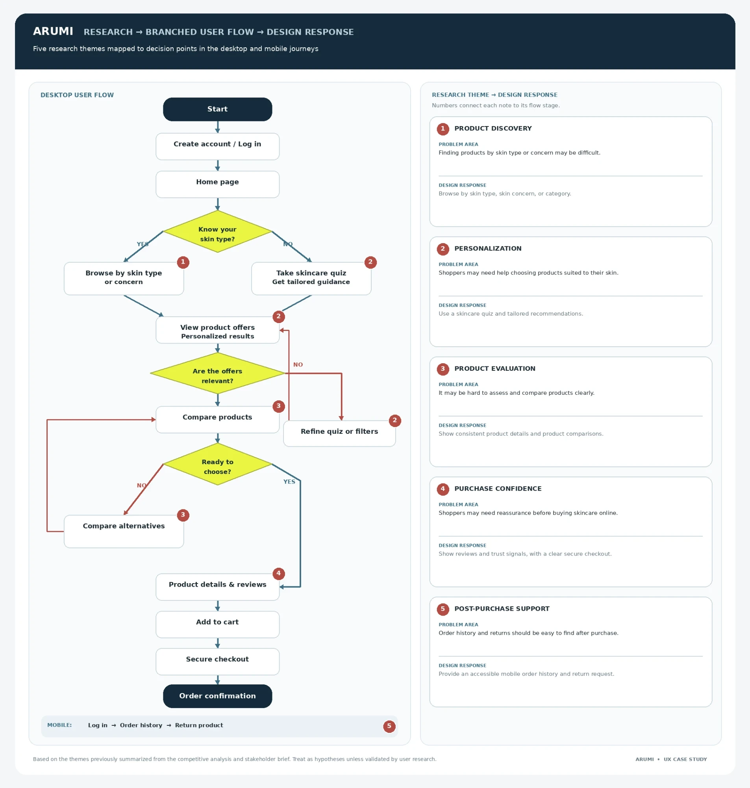
Sketches
I began with low-fidelity sketches to map the homepage and key shopping sections. In the first prototype, I noticed that navigation and product discovery could be clearer, so I refined the next iteration to make the skincare quiz, product information, and shopping paths easier to find.
Before (v1) and after (v5 redesign) · scroll to flip through
Three stacked header bands became one slim bar and a nav organised by skin type, concerns, brands and sets, with the quiz as the hero.
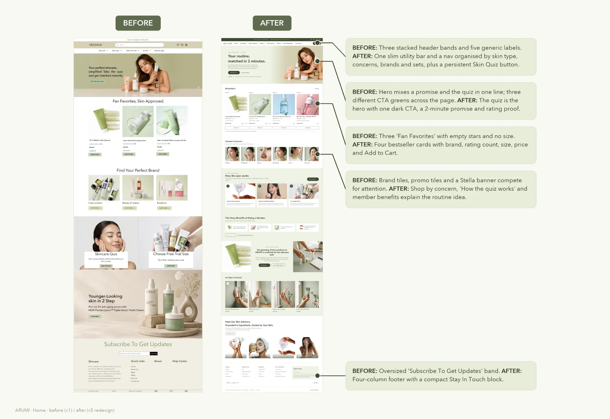
No title or filters became a page with filter chips, a regimen guide and seven sections in routine order, cleanse to protect.
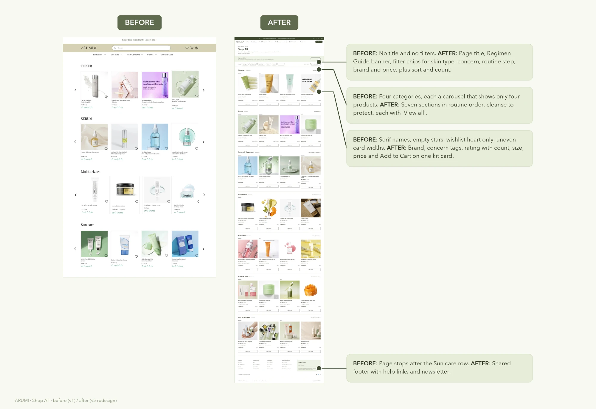
A single "New" label became a launch banner, a 4-column "New this week" grid and featured edits tied to skin goals.
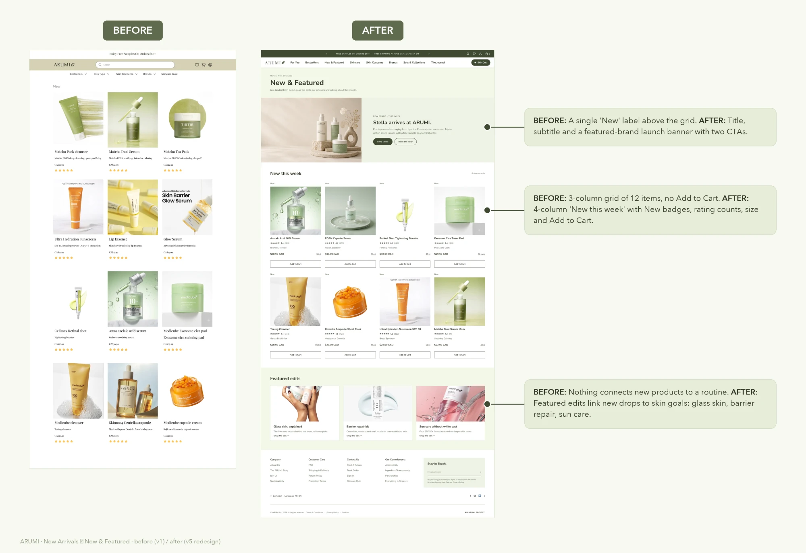
A grey one-liner and a sage button that failed contrast (2.45:1) became "Five questions. One routine that fits." with a dark CTA and no account wall.
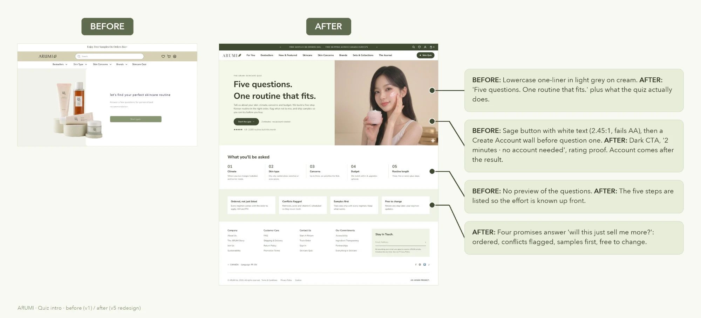
Checkboxes that implied multi-select became single-select photo cards, a progress rail and a "Why we ask" note.
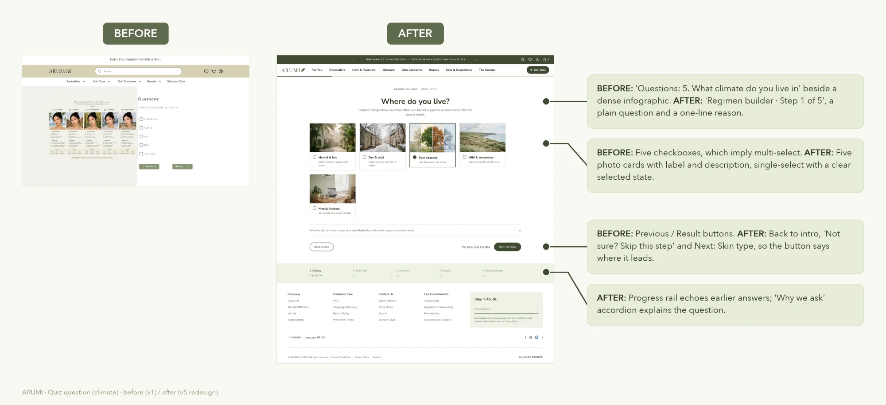
Three equal products per step and twelve "Add to bag" buttons became four matched options per step, a compare table and one "Add routine to bag".
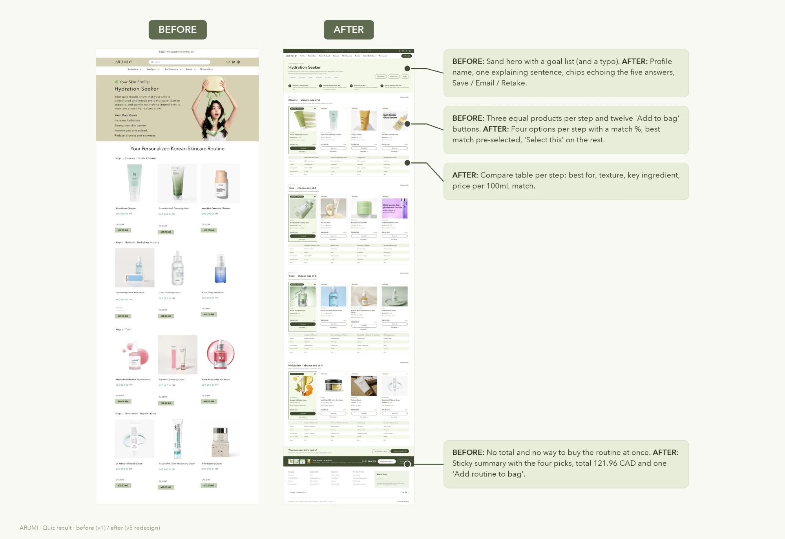
The quiz, start to result
In v5 the quiz became a five-step regimen builder: climate, skin type, concerns, budget and routine length. It ends in a skin profile with four matched options per step and one button to add the whole routine to the bag.
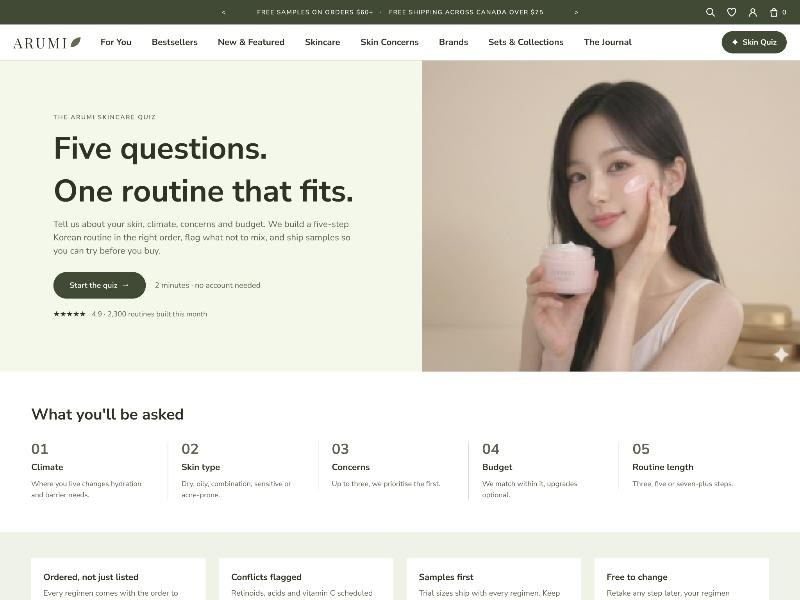
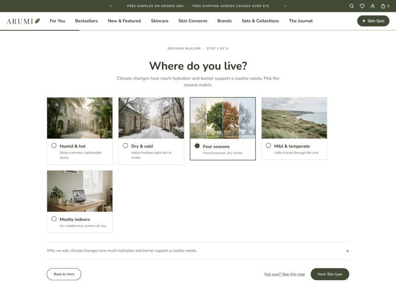
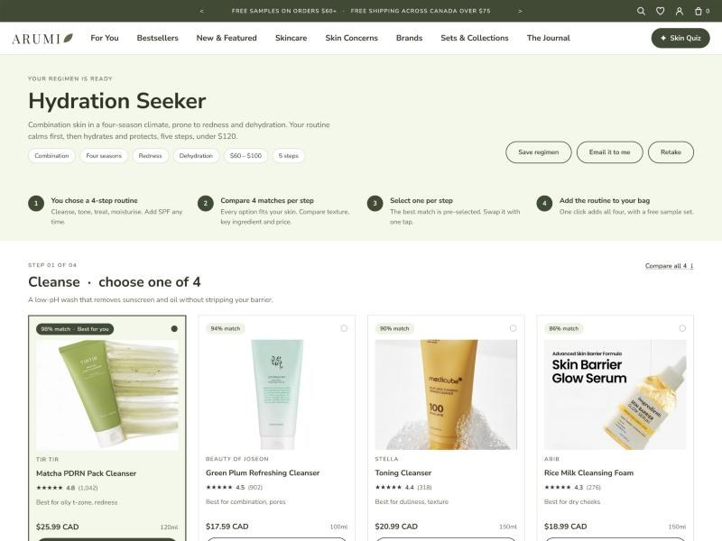
One green tone, every fill a variable
The v5 kit is a light-green monotone. Primitives live in Green/*, semantic aliases in v5/*, and every fill in the kit is bound to a variable. Each component is lifted from the live v5 screens, so the kit and the pages match one to one.
Skincare matched to your skin, not the trend.
Skincare matched to your skin, not the trend.
Skincare matched to your skin, not the trend.
Skincare matched to your skin, not the trend
14 text styles, from Display 44 Bold to Eyebrow 11 SemiBold. Nunito Sans stands in for Avenir Next in production; Playfair Display is used only for the ARUMI wordmark.
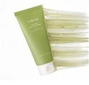
Matcha PDRN Pack Cleanser★★★★★ 4.8 (1,042)$25.99 CAD120mlAdd To Cart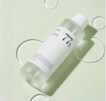
Heartleaf 77% Soothing Toner★★★★★ 4.6 (2,310)$29.99 CAD250mlAdd To CartA return in four steps
The brief asked for order history and return requests on mobile. The app takes Mina from her account to a started return with a QR code, with the refund shown before she confirms.
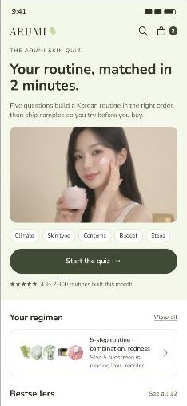
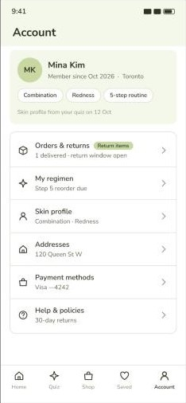
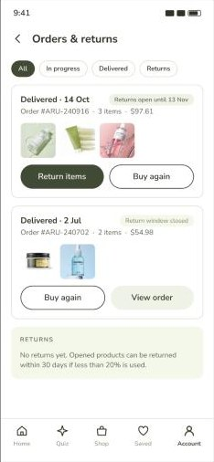
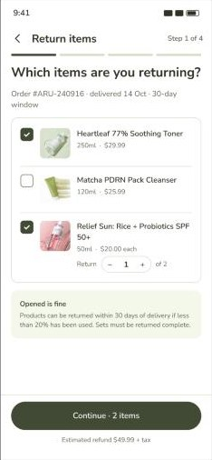
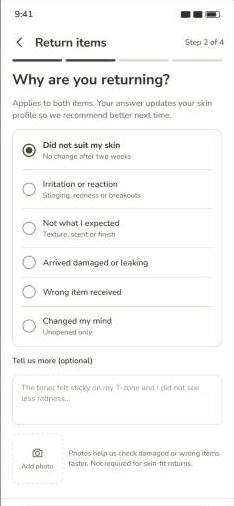
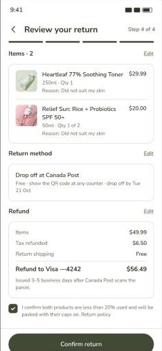
Validate
To validate the refined design, I repeated the usability test using the same tasks and questions as the first round. Task completion improved across all five tasks, increasing from 2–3 participants before the changes to 6–7 participants afterward, out of seven.
Conclusion
Overall, Arumi’s redesign created a more guided and personalized skincare shopping experience, helping users find suitable products, understand routine steps, and make informed choices.
In the second usability test, 6–7 out of 7 participants completed each task, compared with 2–3 out of 7 in the first round. This project taught me how to turn research insights into focused design decisions and use repeated testing to see whether those changes actually help users.
Given the limited project timeline, I prioritized the core product-discovery and selection journey. With more time, I would test the product-comparison and checkout flows with a broader group of participants and use their feedback to further refine the experience.
After thoughts
Two things I'd improve with more time.